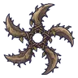

หญ้าหนามกลิ้ง · ร่างหนามม่วง
มอนธาตุลม Lv 38–50
เจอที่
| แมพ | โซน | Lv | ภูมิภาค |
|---|---|---|---|
| กังหันลมร้างริมผา | 38–50 | ที่ราบสูง |
ค่าสถานะตามเลเวล
| Lv | HP | ATK | DEF | MDEF | EXP | Job |
|---|---|---|---|---|---|---|
| 38 | 6,548 | 95–142 | 11 | 7 | 93 | 70 |
| 44 | 9,911 | 113–170 | 13 | 8 | 106 | 80 |
| 50 | 14,137 | 128–191 | 14 | 9 | 119 | 89 |
ตีด้วยธาตุไหนดี
แรงขึ้น: ดิน ×1.5 พิษ ×1.25
เบาลง: น้ำ ×0.5 ลม ×0.25
วัตถุดิบที่ดรอป
| ของ | โอกาส | |
|---|---|---|
| หนามหญ้ากลิ้ง | 82% | 1 ชิ้น (15% ได้ 2) |
อุปกรณ์ที่ดรอป (1)
| ของ | โอกาส |
|---|---|
 ดาวยักษ์หญ้าหนามกลิ้ง | 0.24% |
สกิล
กระโจน (Lv 25+) · กระโจน (Lv 60+)